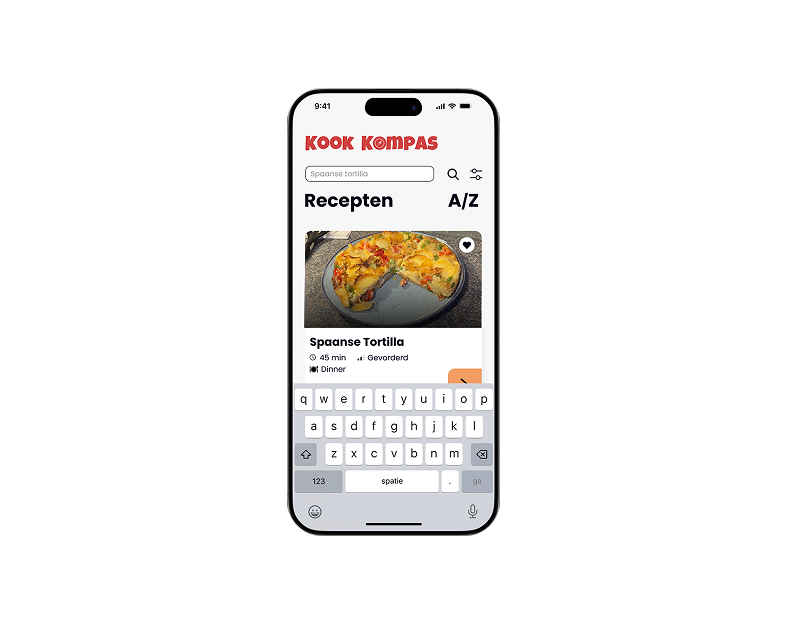
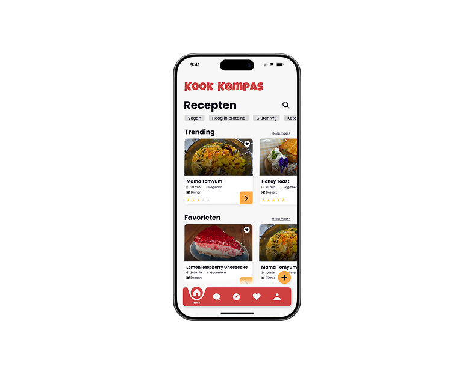

Heel Holland Kookt – Recipe App Prototype
Design & Prototype (Figma)
View prototype ↗About this project
For this Project Team 1 course, we designed a recipe cooking app called Heel Holland Kookt. Working in a team, we created the concept, designed the interface and built a clickable prototype in Figma.
At the start of the project, we chose a real recipe to base the app on. Our team selected the Spanish tortilla, which we prepared and photographed ourselves. These images were later used in the app's recipe screens.
The app allows users to browse recipes, select a dish and follow a step-by-step cooking guide. We also designed a community feature where users can share their own dishes, post photos and interact with other home cooks.
My focus was on designing intuitive, clear user flows and creating a visual style that felt warm, friendly and easy to use.
Preview

